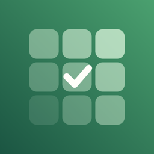

Widgets and Apple Watch
Your habits, one glance away.
See your progress and check in without opening the app, from your Home Screen or your wrist.
Three habits, with ten days of progress.

Open HabitA private habit tracker built for quick check-ins from your Home Screen, Shortcuts, or the app.
Less friction
Record a Completion from your Home Screen, or build it into a Shortcut. Keep a private Day Note when there’s more to remember. Your progress saves locally first.
Apple Shortcuts
Find Open Habit in Shortcuts and use its four actions in your own routines and automations.
Day Notes
Open a day in your Habit calendar and add a private note. Keep the small details alongside your progress.


Progress with context
Create Habits with an emoji, color, and optional daily or weekly Streak Goal. Check a Habit off, or count it: each tap adds your amount, like +5 pages or +10 pushups, and the number lands right in the day’s square. A rolling year shows the rhythm, while the calendar lets you correct any past day. Add a private Day Note when the reason matters as much as the count.
Empty days stay empty. Open Habit never labels them failed, missed, or overdue.
Private by design
No Open Habit account. No advertising. No analytics. No tracking SDKs or developer-operated user-data service.
Every personal tracking flow works without a network connection.
Your devices synchronize through your private iCloud database when iCloud is available.
Exported JSON is your portable backup. iCloud synchronization is not version history.
Yours to keep
Export a complete Open Habit JSON backup and restore it later. Import supported HabitKit version 2 exports. Local recovery backups are created before replacement, import, and deletion, and Settings lets you delete all app data.
Open source
Open Habit is free to download and use, with no subscription, ads, or in-app purchases. Inspect, build, contribute to, or fork the source under the MIT license.
The clear answers
You can move supported HabitKit version 2 JSON exports into Open Habit, a free, open-source habit tracker for iPhone and iPad. Importing into Open Habit is free.
habitkit_export.json to the Files app.Supported habits bring their completion history, notes, categories, and current daily or weekly goals. The standard import preserves existing Open Habit habits and skips matching IDs. Reminders and historical goal changes do not transfer; icons and colors may change. Inverse habits and custom-value tracking are not supported. Keep your original export.
HabitKit is free to download with optional paid Pro upgrades. See its export guide for more help saving your file.
No Open Habit account is required. An Apple Account is needed only for iCloud synchronization.
On your devices and, when iCloud is available, in your private iCloud database. The developer does not receive your Habit data through the app.
Yes. Changes save locally first and synchronize later when iCloud becomes available.
It can help restore data after reinstalling, but edits and deletions also synchronize. Export JSON when you want a backup file you control.
Open Habit supports iPhone and iPad on iOS and iPadOS 17 or later, and Apple Watch on watchOS 10 or later with a paired iPhone.
Not currently. Open Habit is for iPhone, iPad, and Apple Watch.
Small steps. Your own pace.